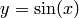
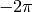
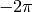
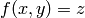
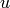
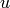

Navigation
- index
- next |
- previous |
- Sage Tutorial v4.3 »
- 导览 »

Sage可以绘制二维或三维图像。
二维图像中，Sage可以画圆、直线和多边形， 在直角坐标系或极坐标系中做函数图像，等高线图，向量场图。 下面是一些例子。更多关于绘图的例子请参考： 解微分方程组 和 Maxima, 以及“Sage的构成”。
下面的命令画一个以原点为中心，半径为1的黄色的圆：
sage: circle((0,0), 1, rgbcolor=(1,1,0))
实心圆：
sage: circle((0,0), 1, rgbcolor=(1,1,0), fill=True)
还可以把圆赋给一个变量，这样并不会将其画出来：
sage: c = circle((0,0), 1, rgbcolor=(1,1,0))
要画出来的话，需要使用 c.show() 或 show(c):
sage: c.show()
或者，可以执行 c.save('filename.png') 把图像保存到文件中。
因为坐标轴的尺度不同，现在这个“圆”看上去像椭圆。可以这样解决：
sage: c.show(aspect_ratio=1)
命令 show(c, aspect_ratio=1) 的效果是一样的， 或者你可以在保存图像的时候使用 c.save('filename.png', aspect_ratio=1).
绘制基本函数的图像是非常容易的：
sage: plot(cos, (-5,5))
一旦指定了变量名，就可以绘制参数方程的图像：
sage: x = var('x')
sage: parametric_plot((cos(x),sin(x)^3),(x,0,2*pi),rgbcolor=hue(0.6))
特别注意，只有当原点在图片的可视范围内时，坐标轴才会相交， 并且对于很大的数值，会使用科学记数法标记。
sage: plot(x^2,(x,300,500))
你可以把多个图像组合在一起：
sage: x = var('x')
sage: p1 = parametric_plot((cos(x),sin(x)),(x,0,2*pi),rgbcolor=hue(0.2))
sage: p2 = parametric_plot((cos(x),sin(x)^2),(x,0,2*pi),rgbcolor=hue(0.4))
sage: p3 = parametric_plot((cos(x),sin(x)^3),(x,0,2*pi),rgbcolor=hue(0.6))
sage: show(p1+p2+p3, axes=false)
画实心图形的一个好方法是先生成点的列表（下面例子中的 L ） 再用 polygon 命令画出由这些点形成的边界所组成的图形。 比如下面是一个绿色的曲边三角形：
sage: L = [[-1+cos(pi*i/100)*(1+cos(pi*i/100)),\
... 2*sin(pi*i/100)*(1-cos(pi*i/100))] for i in range(200)]
sage: p = polygon(L, rgbcolor=(1/8,3/4,1/2))
sage: p
输入 show(p, axes=false) 可以看到没有坐标轴的图形。
可以在图像上添加文字：
sage: L = [[6*cos(pi*i/100)+5*cos((6/2)*pi*i/100),\
... 6*sin(pi*i/100)-5*sin((6/2)*pi*i/100)] for i in range(200)]
sage: p = polygon(L, rgbcolor=(1/8,1/4,1/2))
sage: t = text("hypotrochoid", (5,4), rgbcolor=(1,0,0))
sage: show(p+t)
微积分教师经常在黑板上画下面的图像：不是arcsin的一段，而是几段，
即函数  (其中  介于  与
介于  与  )
关于45度线的翻转。下面的Sage命令可以构造出该图像：
)
关于45度线的翻转。下面的Sage命令可以构造出该图像：
sage: v = [(sin(x),x) for x in srange(-2*float(pi),2*float(pi),0.1)]
sage: line(v)
因为正切函数比正弦函数的范围大的多， 如果你想用同样的方法做出反正切函数，需要调整一下 x 轴的最大、最小值：
sage: v = [(tan(x),x) for x in srange(-2*float(pi),2*float(pi),0.01)]
sage: show(line(v), xmin=-20, xmax=20)
Sage还可以绘制极坐标图形，等高线图和向量场图（对于某些特殊类型的函数）。 下面是等高线图的例子：
sage: f = lambda x,y: cos(x*y)
sage: contour_plot(f, (-4, 4), (-4, 4))
Sage也能创建三维图像。无论是在notebook中，还是在REPL中， 显示三维图像默认都是调用开源软件包 [Jmol], 它支持使用鼠标旋转和缩放图像。
使用 plot3d 绘制形如  的函数图像：
sage: x, y = var('x,y')
sage: plot3d(x^2 + y^2, (x,-2,2), (y,-2,2))
或者，你可以用 parametric_plot3d 绘制参数曲面，
其中  由一个或两个变量（参数，通常为  和
由一个或两个变量（参数，通常为  和  ）确定。
上面的图像可以表达为参数方程形式：
）确定。
上面的图像可以表达为参数方程形式：
sage: u, v = var('u, v')
sage: f_x(u, v) = u
sage: f_y(u, v) = v
sage: f_z(u, v) = u^2 + v^2
sage: parametric_plot3d([f_x, f_y, f_z], (u, -2, 2), (v, -2, 2))
Sage中第三种绘制三维图像的方法是 implicit_plot3d, 它绘制形如 f(x, y, z) = 0 （定义了一个点集）的函数的图像。 我们用经典公式绘制一个球面：
sage: x, y, z = var('x, y, z')
sage: implicit_plot3d(x^2 + y^2 + z^2 - 4, (x,-2, 2), (y,-2, 2), (z,-2, 2))
下面是一些例子：
sage: u, v = var('u,v')
sage: fx = u*v
sage: fy = u
sage: fz = v^2
sage: parametric_plot3d([fx, fy, fz], (u, -1, 1), (v, -1, 1),
... frame=False, color="yellow")
sage: u, v = var('u,v')
sage: fx = (1+cos(v))*cos(u)
sage: fy = (1+cos(v))*sin(u)
sage: fz = -tanh((2/3)*(u-pi))*sin(v)
sage: parametric_plot3d([fx, fy, fz], (u, 0, 2*pi), (v, 0, 2*pi),
... frame=False, color="red")
Twisted torus:
sage: u, v = var('u,v')
sage: fx = (3+sin(v)+cos(u))*cos(2*v)
sage: fy = (3+sin(v)+cos(u))*sin(2*v)
sage: fz = sin(u)+2*cos(v)
sage: parametric_plot3d([fx, fy, fz], (u, 0, 2*pi), (v, 0, 2*pi),
... frame=False, color="red")
Lemniscate:
sage: x, y, z = var('x,y,z')
sage: f(x, y, z) = 4*x^2 * (x^2 + y^2 + z^2 + z) + y^2 * (y^2 + z^2 - 1)
sage: implicit_plot3d(f, (x, -0.5, 0.5), (y, -1, 1), (z, -1, 1))
| [Jmol] | Jmol: an open-source Java viewer for chemical structures in 3D http://www.jmol.org/ |